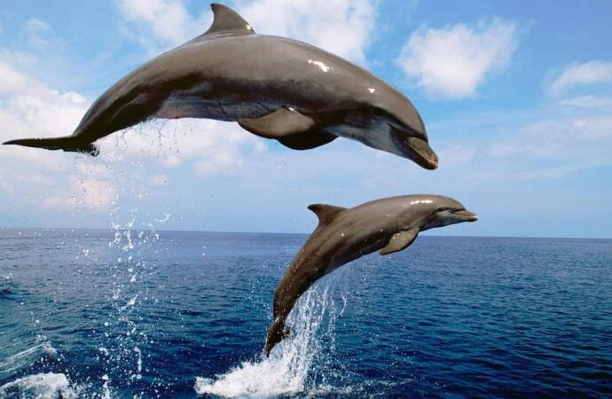

Дельфі́нові (Delphinidae) — родина ссавців підряду зубатих китів ряду китоподібних (Cetacea). Представники родини трапляються в усіх океанах і морях, а також у деяких річкових системах. Дельфінові видаються дуже розумними, вони швидко й гнучко можуть адаптуватися до нових ситуацій. В Україні китоподібних можна зустріти у Чорному, і в Азовському морях — це види дельфінів афаліна звичайна (Tursiops truncatus), білобочка (Delphinus delphis), а також азовка (Phocoena phocoena relicta).
Білобочка чорноморська
Delphinus delphis ponticus - дуже красивий дельфін, з чорними кругами навколо очей та сірими відмітинами з боків. Мешкає переважно подалі від берегів, зрідка трапляється біля берегів, уникає опріснених і забруднених акваторій. З 1937 р. постійно спостерігається в Каркінітській затоці, біля острова Джарилгач та в Джарилгацькій затоці, а з 1954 р. постійно біля Тендрівської коси. До 1930 р. чисельність білобочок у Чорному морі становила близько 1,5–2 млн. особин, у 1970 р. близько 200 тис., у 1980 р. максимум 96 тис. Під час сезонних міграцій та кормових кочівель може утворювати великі зграї до сотні голів. Швидкість цього виду дельфінів 36–60 км/годину, стрибає вгору на 5 м, в довжину на 9 м, найбільший час перебування під водою 8 хвилин. Цей дельфін випускає фонтан висотою до 1,5 м. Може видавати 19 різних звуків з частотою до 19 кілогерц. Статевої зрілості досягає у 3–4 роки. Самка раз на рік після 10–11-місячної вагітності народжує одне маля (в основному влітку). Малюк живиться молок ом матері до 5 місяців. Доросла особина живиться дрібною рибою (кілька, кефаль та морські голки), а також молюсками та рідше ракоподібними. За їжею білобочка ниряє не глибше ніж на 70 см. Живе до 20–25 років, досягаючи довжини тіла до 210 см і маси – до 100 кг. В умовах неволі не приживається, хоча до людини ставиться позитивно й ніколи не кусається. є 12 місяців. Малюк, розміром до 1 м та вагою в 10 кг, народжується під водою хвостиком вперед. Відразу після народження сам спливає на поверхню, щоб вдихнути повітря. Перші декілька місяців тримається поряд з матір’ю, а до 4–6 (іноді до 18) місяців живляться лише молоком матері. Живе цей дельфін до 25 років, щоправда в умовах неволі, як правило, не живуть більше 3–5 років, хоча здатність до дресирування у афаліни вища ніж в інших видів дельфінів. Довжина тіла, добутих в Чорному морі дельфінів, досягає 228 см у самців та 222 см у самок, маса – до 200 кг (найбільший з чорноморських дельфінів). Біля Джарилгача та Тендри афаліна реєструється постійно з 1957 р., а в 2000 р.
Афаліна чорноморська
Tursiops truncatus ponticus - нараховує у територіальних водах України не більше 500–1000 особин. Зустрічається навесні та влітку, в зимовий період відпливає до турецьких берегів. Саме цей вид дельфінів зустрічається біля пляжних берегів Джарилацької затоки. Живе гуртами в кілька десятків особин, іноді збирається у більші зграї. Найбільша швидкість 45–55 км/годину, висота стрибка 5 м. Здатні видавати 6 типів звуків, в частоті від 7 до 170 тис. герц, що нагадують скрипіння іржавих дверей. Тварина дихає повітрям, періодично спливаючи на поверхню. Має міцні конічно загострені зуби, 6–10 мм товщиною, 19–28 пар зверху (40–52) та 18–24 знизу (36–48). Живиться дрібною придонною рибою (анчоус, камбала, кефаль, лобань, морські йоржі, скати), а також крабами і молюсками. За добу може з’їсти до 16 кг риби, пірнаючи за нею на глибину до 90 м, залишаючись під водою іноді до 15 хвилин. Статевої зрілості досягає у 5–6 років. Розмножується раз на два роки.
Звичайна морська свиня (азовка) або питун
Phocoena phocoena relicta - мешкає в основному в прибережній мілководній акваторії. Чисельність в 1980 р. складала 10 тис. особин. З середині ХХ ст. дельфіни цього виду реєструвалися в уловах в Каркінітській затоці, аж до Чурюмської банки, та біля Тендрівської коси. Живиться бичками та хамсою. Статевої зрілості досягає у 3–4 роки. Вагітність триває 9–10 місяців. Малята народжуються влітку і близько 4 місяців живляться молоком матері. Досягає довжини тіла 160 см при масі – 30 кг та є найменшим дельфіном у Чорному морі. В умовах неволі живе не більше 2 місяців. Занесений до Європейського Червоного списку (1991 р.).